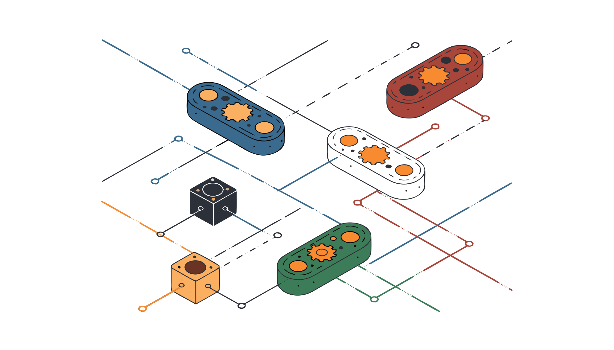
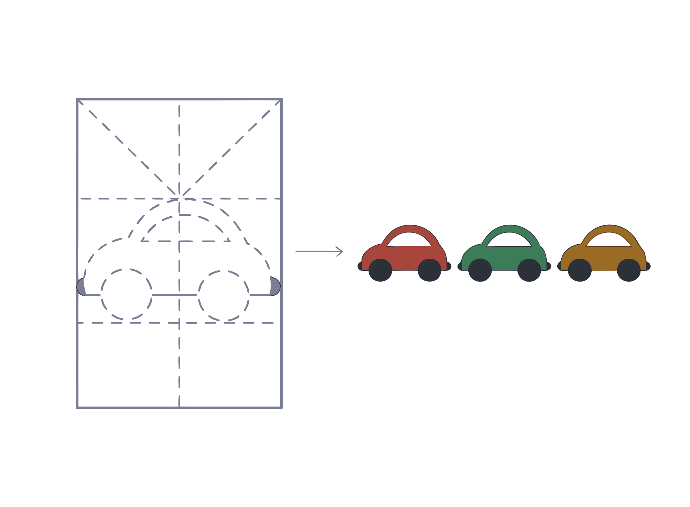
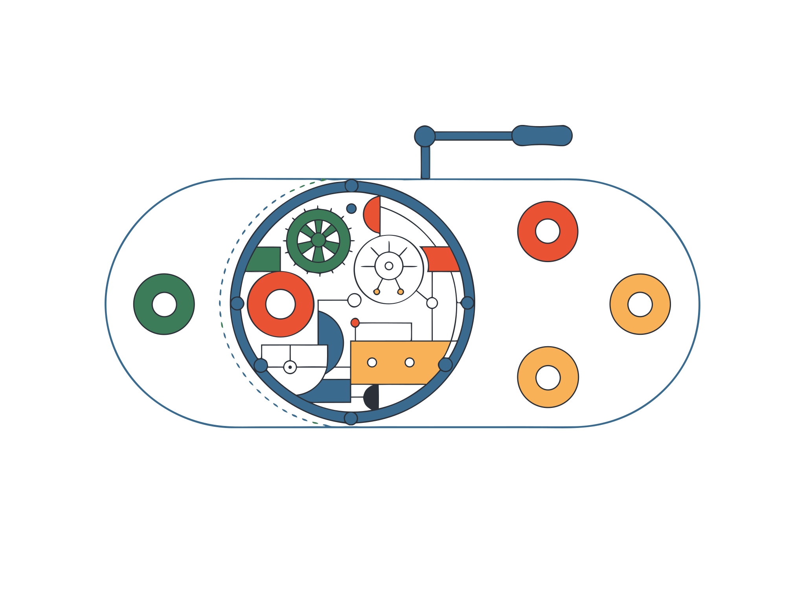
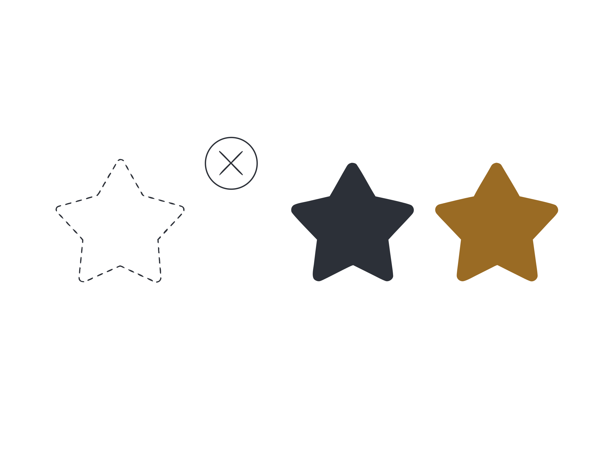
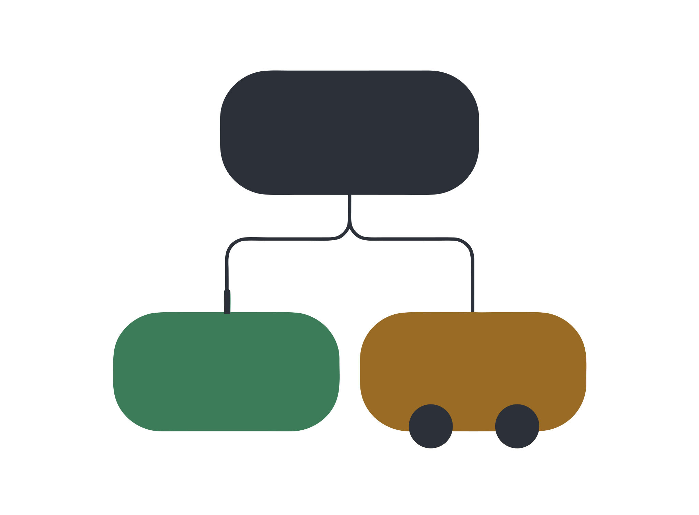
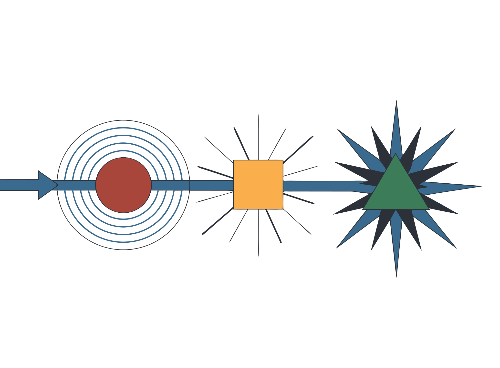

Programación orientada a objetos en SLE2
Esta guía explica la POO desde cero, sin dar por sabido nada, usando ESLE2 POO: el mismo lenguaje SL de siempre con clases y objetos agregados. Todos los ejemplos se pueden copiar y ejecutar en el IDE. Atajo: pulsá / para buscar.

Acá está el lenguaje. La interfaz —qué hace cada botón y cada panel— se explica con capturas en el botón Tutorial de ESLE2 POO.
Qué es ESLE2 POO
El lenguaje SLE2 de siempre, con clases y objetos.
Un agregado, no un lenguaje nuevo
SL/SLE2 es un lenguaje procedural: datos por un lado (variables, registros, arreglos) y acciones por el otro (subrutinas). No fue diseñado para objetos, así que la POO no existe en el SLE2 original.
ESLE2 POO es una extensión: mantiene intacto todo lo que ya sabés
—numerico, cadena, logico, vectores, matrices,
registros, si, mientras, desde, subrutinas,
imprimir, leer…— y le suma clases, objetos, herencia y
polimorfismo. Todo programa SLE2 válido sigue funcionando acá sin cambios.
Cómo se usa
- El IDE de ESLE2 POO funciona igual que el clásico: escribís,
pulsás Ejecutar (Ctrl+Enter), ves la salida en la
pantalla y los datos de
leer()salen del panel de entrada. - Revisar comprueba la sintaxis y agrega recomendaciones propias de objetos: clases que nunca se usan, atributos que nadie toca, métodos que nadie llama.
- El explorador de archivos del menú Ver también está acá,
apagado de fábrica, con sus propios archivos
.slp. - La barra está agrupada en los menús Archivo, Ver y Traducir: a la vista quedan Ejecutar, Revisar y Depurar.
- El Curso tiene 50 ejercicios de objetos con corrección automática.
- El botón Depurar corre el programa paso a paso y muestra, en cada parada, los atributos del objeto y las variables del método en curso.
- A Python y A Java muestran el mismo programa —clases,
herencia y objetos incluidos— escrito en esos lenguajes, listo para correr con
python programa.pyojavac Programa.java && java Programa. - ESLE2 POO también anda en el celular y se instala como aplicación desde el botón de la barra de arriba.
- Los sonidos del botón también están acá: suenan al revisar o ejecutar sin errores y al resolver un ejercicio de objetos, y se apagan desde el mismo botón.
- El ⟲ Historial también está acá, con su propia lista de versiones: guarda solo cada vez que ejecutás y antes de que algo pise el editor, y podés volver a cualquier versión anterior viendo antes qué cambió.
- El autocompletado del editor conoce también los objetos: después de un
punto ofrece los atributos y los métodos de tus clases, y después de
nuevo, solo clases. Ctrl + Espacio lo abre cuando quieras. - ▤ Memoria muestra el simulador de memoria paso a paso. En POO tiene una zona más: el montículo. La variable no guarda el objeto sino su dirección —se ve la flecha— y ahí se entiende de una por qué dos variables que apuntan al mismo objeto cambian juntas.
- ◇ Diagrama dibuja el diagrama de flujo del programa, de cada
constructor y de cada método, con la explicación en palabras al lado. El dibujo se baja
como
.svg. - Los paneles se acomodan: se cambian de tamaño arrastrando las barras que los separan y se mueven de lugar arrastrándolos del título (o con el botón del encabezado). ⤢ Paneles vuelve a la disposición original.
- Los archivos se guardan con extensión
.slppara distinguirlos de los.slclásicos.
Por qué objetos
Qué problema resuelve la POO, mostrado con el mismo programa escrito de las dos maneras.
El problema
Imaginá una cuenta bancaria. En SLE2 clásico la escribirías con un registro y unas subrutinas sueltas:
Sin objetos
tipos
CUENTA : registro
{
titular : cadena
saldo : numerico
}
var
c : CUENTA
inicio
c.titular = "Ana"
c.saldo = 1000
depositar (c, 500)
c.saldo = -99999 // ← nada lo impide
fin
sub depositar (ref c : CUENTA;
monto : numerico)
inicio
si ( monto > 0 )
{
c.saldo = c.saldo + monto
}
finCon objetos
clase CUENTA
{
atributos
privado
titular = ""
saldo = 0
constructor (n : cadena; ini : numerico)
inicio
este.titular = n
este.saldo = ini
fin
metodo depositar (monto : numerico)
inicio
si ( monto > 0 )
{
este.saldo = este.saldo + monto
}
fin
}Las dos versiones hacen lo mismo, pero la segunda arregla tres cosas:
- Los datos y las operaciones viven juntos. Para saber todo lo que se puede hacer con una cuenta, mirás la clase; no hay que buscar subrutinas dispersas.
- Nadie puede romper el estado desde afuera. Con el registro,
c.saldo = -99999es legal. Con la clase,saldoes privado: solo los métodos de la clase lo tocan, y ellos validan. - El nombre de la operación va con la cosa. Se escribe
c.depositar (500), nodepositar (c, 500). Parece un detalle de escritura, pero es lo que después permite que dos clases distintas respondan al mismo mensaje de maneras distintas (eso es el polimorfismo).
Los cuatro pilares
La POO se apoya en cuatro ideas. Cada una tiene su capítulo más abajo:
1 · Encapsulamiento
El objeto esconde sus datos y solo deja entrar por la puerta que él define.
2 · Abstracción
Se define qué sabe hacer algo, sin decir todavía cómo lo hace.
3 · Herencia
Una clase parte de otra y le agrega o le cambia lo que necesita.
4 · Polimorfismo
El mismo pedido, hecho a objetos distintos, produce respuestas distintas.
Clase y objeto
La distinción más importante de todas: el molde y las cosas hechas con él.
El molde y las piezas

- La clase se escribe una vez y describe la forma: qué atributos y qué métodos van a tener sus objetos.
- El objeto (o instancia) se crea con
nuevoy tiene sus propios valores. Dos objetos de la misma clase son independientes: cambiarle el saldo a uno no afecta al otro.
Anatomía de una clase
atributos declara el
estado; el constructor dice cómo arranca cada objeto; los metodo
son las operaciones. La palabra este se refiere, dentro de la clase, al objeto
que en ese momento está ejecutando el método.Un programa completo, de punta a punta
clase PERSONA
{
atributos
privado
nombre = ""
edad = 0
constructor (n : cadena; e : numerico)
inicio
este.nombre = n
este.edad = e
fin
metodo saludar ()
inicio
imprimir ("Hola, soy ", este.nombre, " y tengo ", este.edad, " anios\n")
fin
metodo cumplir_anios ()
inicio
este.edad = este.edad + 1
fin
}
var
a : PERSONA
b : PERSONA
inicio
a = nuevo PERSONA ("Ana", 17)
b = nuevo PERSONA ("Beto", 40)
a.saludar()
b.saludar()
a.cumplir_anios()
a.saludar() // solo cambió Ana
b.saludar()
finImprime:
Hola, soy Ana y tengo 17 anios
Hola, soy Beto y tengo 40 anios
Hola, soy Ana y tengo 18 anios
Hola, soy Beto y tengo 40 aniosFijate en lo esencial: hay una clase PERSONA y
dos objetos, cada uno con su propio nombre y su propia
edad. a.cumplir_anios() toca únicamente a a.
Dónde va cada cosa
clase NOMBRE [hereda de OTRA]
{
atributos
[publico | privado | protegido]
[compartido] nombre [: tipo] [= valor inicial]
constructor (parametros)
inicio
sentencias...
fin
metodo [publico|privado|protegido] [abstracto] nombre (parametros) [retorna tipo]
inicio
sentencias...
fin
}Las clases pueden escribirse antes del inicio del programa principal o
después del fin, mezcladas con las subrutinas. No importa el orden: una clase
puede usar a otra definida más abajo.
Atributos: el estado del objeto
Los datos que cada objeto lleva consigo.
Declaración
Se declaran igual que las variables de SLE2, con las mismas dos formas (tipo explícito o tipo deducido del valor inicial):
clase EJEMPLO
{
atributos
privado
nombre = "" // cadena, deducido del valor
edad = 0 // numerico
activo = TRUE // logico
notas : vector [*] numerico // tipo explícito, arranca sin dimensionar
nacimiento : FECHA // un registro definido en "tipos"
jefe : PERSONA // otro objeto: arranca en nulo
}Cada objeto recibe su propia copia de estos atributos cuando se lo crea, con el valor
inicial indicado o con el valor por defecto del tipo (0, "",
FALSE, nulo).
este: en ese momento el objeto todavía se está
armando. Si un atributo depende de otro, calculalo en el constructor.este: el objeto actual
Dentro de un método, este es el objeto sobre el que se llamó ese método.
Siempre se escribe explícito, para que quede claro qué es un atributo y qué una variable
local:
metodo depositar (monto : numerico)
var
comision = 0 // variable local del método
inicio
comision = monto * 0.01
este.saldo = este.saldo + monto - comision
fineste también sirve para llamar a otro método del mismo objeto
(este.recalcular()) y para pasarse a sí mismo como parámetro
(lista.agregar (este)).
Métodos: lo que el objeto sabe hacer
Subrutinas que viven dentro de la clase y trabajan sobre el objeto.
Definición y llamada
Un método se escribe como una subrutina, pero adentro de la clase y con la palabra
metodo. Puede tener parámetros, variables locales, constantes propias y
devolver un valor con retorna:
clase CALCULADORA
{
atributos
privado
memoria = 0
metodo sumar (a, b : numerico) retorna numerico
inicio
este.memoria = a + b
retorna ( este.memoria )
fin
metodo ultimo () retorna numerico
inicio
retorna ( este.memoria )
fin
metodo reiniciar ()
inicio
este.memoria = 0
fin
}
var
c : CALCULADORA
inicio
c = nuevo CALCULADORA()
imprimir (c.sumar (2, 3), " ")
imprimir (c.ultimo(), " ")
c.reiniciar()
imprimir (c.ultimo())
finImprime 5 5 0. Los métodos que devuelven algo se usan dentro de una
expresión; los que no devuelven nada se usan como una sentencia.
Parámetros por valor y por referencia
Valen las mismas reglas que en las subrutinas de SLE2: por defecto los parámetros van por
valor, y con ref van por referencia.
metodo cargar (ref v : vector [*] numerico) // lo modifica de verdad
metodo mostrar (v : vector [*] numerico) // recibe una copiaref. Lo que se
copia es la referencia. Ver Los objetos son referencias.El constructor y el ciclo de vida
Cómo nace un objeto y qué pasa desde que se crea hasta que se lo suelta.
nuevo y el constructor
El constructor es un método especial que se ejecuta una sola vez, en el momento
de crear el objeto. Su trabajo es dejar el objeto en un estado válido:
c = nuevo CUENTA ("Ana", 1000)- Si la clase no tiene constructor, se escribe
nuevo CLASE()sin parámetros. - Una clase puede tener un solo constructor.
- Si una clase hija no define constructor, se usa el de la madre.
- El constructor no lleva
retorna: no devuelve nada.
Pilar 1 · Encapsulamiento
El objeto protege sus datos y decide qué se puede hacer con ellos.
La idea

Encapsular es esconder el estado y ofrecer solo operaciones controladas. Sirve para dos cosas concretas:
- Que el objeto nunca quede en un estado imposible. Si el saldo solo se
modifica desde
depositar()yextraer(), y esos métodos validan, no hay forma de dejar una cuenta con saldo negativo. - Poder cambiar el interior sin romper a nadie. Si mañana guardás el saldo en centavos en vez de en guaraníes, cambiás los métodos y listo: el resto del programa nunca tocó el atributo.
Los tres niveles de visibilidad
| Nivel | Quién puede usarlo | Cuándo se usa |
|---|---|---|
privado | Solo los métodos de esa misma clase. | Casi todos los atributos. Es el valor por defecto. |
protegido | Esa clase y todas las que heredan de ella. | Cuando las hijas necesitan el dato pero el mundo exterior no. |
publico | Cualquiera. | Los métodos que forman la interfaz. Es el valor por defecto de los métodos. |
Ejemplo: la cuenta que no se deja romper
clase CUENTA
{
atributos
privado
saldo = 0
constructor (inicial : numerico)
inicio
este.saldo = max (0, inicial) // ni siquiera nace mal
fin
metodo depositar (monto : numerico) retorna logico
inicio
si ( monto <= 0 )
{
retorna ( FALSE )
}
este.saldo = este.saldo + monto
retorna ( TRUE )
fin
metodo extraer (monto : numerico) retorna logico
inicio
si ( monto <= 0 or monto > este.saldo )
{
retorna ( FALSE )
}
este.saldo = este.saldo - monto
retorna ( TRUE )
fin
metodo saldo_actual () retorna numerico
inicio
retorna ( este.saldo )
fin
}
var
c : CUENTA
inicio
c = nuevo CUENTA (1000)
imprimir (c.extraer (5000), " ", c.saldo_actual(), "\n")
imprimir (c.extraer (400), " ", c.saldo_actual())
// c.saldo = -1 ← esto NO compila: saldo es privado
finImprime FALSE 1000 y TRUE 600. La línea comentada daría un error
claro: el atributo "saldo" es privado de la clase "CUENTA".
Al método que solo devuelve un dato interno (saldo_actual()) se lo suele
llamar consultor o getter; al que lo modifica con validación,
modificador o setter.
Pilar 2 · Abstracción
Definir qué sabe hacer algo, antes de saber cómo lo hace.
La idea

Una clase abstracta se declara con clase abstracta. Puede
tener atributos y métodos normales, y además métodos abstractos: métodos
que solo tienen encabezado, sin cuerpo. Cada clase hija está obligada a escribirlos.
Ejemplo
clase abstracta FIGURA
{
metodo abstracto area () retorna numerico // sin cuerpo: cada hija lo escribe
metodo describir () retorna cadena // método normal, ya resuelto
inicio
retorna ( clase_de (este) + " de area " + str (este.area(), 0, 2) )
fin
}
clase CUADRADO hereda de FIGURA
{
atributos privado
lado = 0
constructor (l : numerico)
inicio
este.lado = l
fin
metodo area () retorna numerico
inicio
retorna ( este.lado * este.lado )
fin
}
var
f : FIGURA
inicio
f = nuevo CUADRADO (3)
imprimir (f.describir())
// f = nuevo FIGURA() ← error: FIGURA es abstracta
finImprime CUADRADO de area 9.00. Mirá lo interesante:
describir() llama a este.area() sin saber qué
figura es. Eso funciona porque la clase abstracta garantiza que toda hija tiene
area().
abstracta, y una hija que no implemente todos
los métodos abstractos heredados no puede instanciarse (tendría que ser abstracta también).Pilar 3 · Herencia
Partir de una clase que ya existe y cambiarle solo lo necesario.
La idea

Se escribe clase HIJA hereda de MADRE. La hija:
- Recibe todos los atributos y métodos de la madre (los privados existen,
pero solo los ve la madre; para que la hija los use tienen que ser
protegido). - Agrega los atributos y métodos que necesite.
- Sobrescribe un método escribiendo otro con el mismo nombre.
- Puede llamar a la versión de la madre con
padre.metodo(...), incluidopadre.constructor(...).
Ejemplo con tres niveles
clase EMPLEADO
{
atributos
protegido
nombre = ""
sueldo = 0
constructor (n : cadena; s : numerico)
inicio
este.nombre = n
este.sueldo = s
fin
metodo sueldo_final () retorna numerico
inicio
retorna ( este.sueldo )
fin
metodo texto () retorna cadena
inicio
retorna ( este.nombre + " cobra " + str (este.sueldo_final(), 0, 0) )
fin
}
clase VENDEDOR hereda de EMPLEADO
{
atributos protegido
comision = 0
constructor (n : cadena; s, c : numerico)
inicio
padre.constructor (n, s) // primero lo que hace la madre
este.comision = c
fin
metodo sueldo_final () retorna numerico
inicio
retorna ( padre.sueldo_final() + este.comision )
fin
}
clase GERENTE hereda de VENDEDOR
{
atributos privado
bono = 0
constructor (n : cadena; s, c, b : numerico)
inicio
padre.constructor (n, s, c)
este.bono = b
fin
metodo sueldo_final () retorna numerico
inicio
retorna ( padre.sueldo_final() + este.bono )
fin
}
var
g : GERENTE
inicio
g = nuevo GERENTE ("Ana", 1000, 200, 500)
imprimir (g)
finImprime Ana cobra 1700: cada padre.sueldo_final() sube un escalón
en la cadena y va sumando. Y texto(), escrito una sola vez en
EMPLEADO, funciona para las tres clases.
Cuándo heredar y cuándo no
La prueba es la frase «es un»: un GERENTE es un EMPLEADO, así que heredar tiene sentido. En cambio un AUTO no es un MOTOR: lo tiene. En ese caso no se hereda, se guarda el motor como atributo. A eso se lo llama composición, y en la duda suele ser la mejor opción.
clase AUTO
{
atributos privado
motor : MOTOR // composición: el auto TIENE un motor
}Pilar 4 · Polimorfismo
El mismo pedido, respuestas distintas según quién lo recibe.
La idea

f.area() una sola vez y cada objeto ejecuta su propia versión.Cómo elige el lenguaje qué método ejecutar
El patrón completo
El polimorfismo se vuelve útil cuando guardás objetos de clases distintas en un mismo vector declarado del tipo de la clase madre:
const
PI = 3.141592654
clase abstracta FIGURA
{
metodo abstracto area () retorna numerico
metodo texto () retorna cadena
inicio
retorna ( clase_de (este) + " → " + str (este.area(), 0, 2) )
fin
}
clase CIRCULO hereda de FIGURA
{
atributos privado
r = 0
constructor (radio : numerico) inicio este.r = radio fin
metodo area () retorna numerico inicio retorna ( PI * este.r ^ 2 ) fin
}
clase RECTANGULO hereda de FIGURA
{
atributos privado
a = 0
b = 0
constructor (x, y : numerico) inicio este.a = x este.b = y fin
metodo area () retorna numerico inicio retorna ( este.a * este.b ) fin
}
clase CUADRADO hereda de RECTANGULO
{
constructor (lado : numerico)
inicio
padre.constructor (lado, lado)
fin
}
var
fs : vector [4] FIGURA // ¡el vector es de FIGURA, la clase madre!
k = 0
total = 0
inicio
fs [1] = nuevo CIRCULO (2)
fs [2] = nuevo RECTANGULO (3, 4)
fs [3] = nuevo CUADRADO (5)
fs [4] = nuevo CIRCULO (1)
desde k=1 hasta alen (fs)
{
imprimir (fs [k], "\n") // cada uno se describe a su manera
total = total + fs [k].area()
}
imprimir ("total ", str (total, 0, 2))
finEl ciclo no tiene ni un si preguntando de qué clase es cada figura. Si mañana
agregás un TRIANGULO, el ciclo no se toca. Esa es toda la ganancia del
polimorfismo: el código que usa los objetos no cambia cuando aparecen clases nuevas.
Preguntar de qué clase es un objeto
si ( f es CIRCULO ) { ... } // ¿es un CIRCULO, o algo que hereda de CIRCULO?
imprimir (clase_de (f)) // el nombre exacto de su clase, como cadenaUn CUADRADO cumple es CUADRADO, es RECTANGULO y
es FIGURA: la herencia se lee hacia arriba.
si ( x es A ) … sino si ( x es B ) …, casi siempre es señal de que eso debería
ser un método sobrescrito en cada clase. El polimorfismo existe justamente para no escribir
esa cadena.Los objetos son referencias
La diferencia más importante entre un objeto y un registro. Leelo dos veces.
Qué guarda realmente una variable de objeto
Compruébalo vos mismo
clase CAJA
{
atributos publico
valor = 0
}
tipos
REG : registro { valor : numerico }
var
a : CAJA
b : CAJA
r : REG
s : REG
inicio
a = nuevo CAJA()
a.valor = 1
b = a // b y a son el MISMO objeto
b.valor = 99
imprimir ("objetos: a=", a.valor, " b=", b.valor, " mismo objeto: ", a == b, "\n")
r.valor = 1
s = r // s es una COPIA de r
s.valor = 99
imprimir ("registros: r=", r.valor, " s=", s.valor)
finImprime objetos: a=99 b=99 mismo objeto: TRUE y
registros: r=1 s=99.
nulo: la variable que todavía no apunta a nada
Una variable de objeto arranca valiendo nulo, que significa «no apunta a
ningún objeto». Usarla antes de crear el objeto es el error más común:
var
c : CUENTA
inicio
c.depositar (100) // error: no se puede llamar a "depositar()" sobre nulo
c = nuevo CUENTA (0) // ← primero hay que crearlo
c.depositar (100) // ahora sí
finPara preguntar se usa c == nulo o la función es_nulo (c).
Asignar c = nulo suelta el objeto.
Comparar objetos: identidad, no contenido
Con objetos, == pregunta si son el mismo objeto, no si tienen
los mismos datos. Dos cuentas distintas con el mismo saldo no son iguales:
a = nuevo CUENTA (100)
b = nuevo CUENTA (100)
imprimir (a == b) // FALSE: son dos objetos distintos
c = a
imprimir (a == c) // TRUE: la misma flechaSi querés comparar por contenido, escribí un método propio:
metodo igual_a (o : CUENTA) retorna logico. La función id_de (o)
devuelve el número único de cada objeto, útil para ver quién es quién.
El método texto()
Cómo lograr que imprimir() muestre un objeto de forma legible.
Convención
Si una clase define un método texto () sin parámetros que devuelve
cadena, imprimir() lo usa automáticamente al recibir un objeto de
esa clase. Si no lo define, muestra <NOMBRE_DE_LA_CLASE>.
clase PUNTO
{
atributos privado
x = 0
y = 0
constructor (a, b : numerico) inicio este.x = a este.y = b fin
metodo texto () retorna cadena
inicio
retorna ( "(" + str (este.x, 0, 0) + "," + str (este.y, 0, 0) + ")" )
fin
}
clase SIN_TEXTO { atributos publico v = 0 }
var
p : PUNTO
s : SIN_TEXTO
inicio
p = nuevo PUNTO (3, 4)
s = nuevo SIN_TEXTO()
imprimir (p, " y ", s)
finImprime (3,4) y <SIN_TEXTO>. Es el equivalente al
toString() de otros lenguajes, y hace que depurar sea muchísimo más cómodo.
Atributos compartidos por la clase
Un dato que pertenece a la clase entera y no a cada objeto.
compartido
Un atributo normal existe una vez por objeto. Uno declarado compartido existe
una sola vez para toda la clase: todos los objetos ven y modifican el
mismo valor. Se accede con CLASE.atributo.
clase ROBOT
{
atributos
compartido publico
fabricados = 0 // uno solo para toda la clase
privado
numero = 0 // uno por cada robot
constructor ()
inicio
ROBOT.fabricados = ROBOT.fabricados + 1
este.numero = ROBOT.fabricados
fin
metodo texto () retorna cadena
inicio
retorna ( "robot " + str (este.numero, 0, 0) +
" de " + str (ROBOT.fabricados, 0, 0) )
fin
}
var
k = 0
r : ROBOT
inicio
desde k=1 hasta 3
{
r = nuevo ROBOT()
}
imprimir (r, " · total: ", ROBOT.fabricados)
finImprime robot 3 de 3 · total: 3. Sirve para contadores, valores de
configuración y constantes de la clase.
Referencia del lenguaje
Todo lo que ESLE2 POO agrega, en tablas.
Palabras reservadas nuevas
| Palabra | Para qué sirve |
|---|---|
clase | Define una clase. |
hereda | clase B hereda de A. El «de» es opcional. |
nuevo | Crea un objeto: nuevo CLASE (args). |
este | El objeto actual, dentro de un método. |
padre | Llama a la versión de la clase madre: padre.metodo(...). |
nulo | El valor de una variable de objeto que no apunta a nada. |
es | obj es CLASE devuelve verdadero o falso. |
Estas otras se reconocen por contexto (solo dentro de una clase), así que podés seguir
usándolas como nombres de variable: atributos, metodos,
metodo, constructor, publico, privado,
protegido, abstracta, abstracto,
compartido.
Funciones predefinidas nuevas
| Función | Qué devuelve |
|---|---|
clase_de (o) | El nombre de la clase del objeto, como cadena. |
es_nulo (o) | Verdadero si la variable no apunta a ningún objeto. |
id_de (o) | Un número único por objeto. Sirve para distinguir identidades. |
Todas las predefinidas de SLE2 (imprimir, leer,
str, val, max, ifval,
dim, alen, archivos, pantalla…) siguen disponibles igual.
Dónde se puede usar una clase
El nombre de una clase es un tipo de dato más, así que vale en todos lados:
var
c : CUENTA // una variable
v : vector [*] CUENTA // un vector de objetos
m : matriz [3, 3] CUENTA // una matriz de objetos
tipos
PAR : registro { izq : CUENTA der : CUENTA } // dentro de un registro
sub procesar (c : CUENTA) retorna CUENTA // parámetro y retorno
metodo mejor () retorna ALUMNO // retorno de un métodoY una clase puede tener como atributo un objeto de otra clase (composición) o incluso un vector de objetos de su propia clase.
Errores frecuentes con objetos
Los mensajes que vas a ver y qué significan.
| Mensaje | Causa | Solución |
|---|---|---|
| no se puede llamar a "m()" sobre nulo | La variable todavía no apunta a ningún objeto. | Creá el objeto antes: c = nuevo CLASE(...). |
| el atributo "x" es privado de la clase "C" | Se intentó tocar un atributo desde afuera. | Agregá un método público que lo consulte o lo modifique. |
| "C" es una clase abstracta: no se pueden crear objetos suyos | nuevo sobre una clase abstracta. | Instanciá una clase hija que implemente los métodos abstractos. |
| "H" no puede instanciarse: no implementa "a()" | La hija heredó un método abstracto y no lo escribió. | Escribí el método en la hija, o declarala abstracta también. |
| la clase "C" no tiene un método llamado "m" | Nombre mal escrito, o el método está en otra clase. | El mensaje te sugiere el más parecido y lista los disponibles. |
| un objeto de la clase "A" no se puede guardar en una variable de tipo "B" | La herencia va en un solo sentido. | Una variable de la madre acepta hijas, pero no al revés. |
| la clase "C" no hereda de ninguna otra, así que no tiene "padre" | Se usó padre en una clase sin madre. | Sacá el padre. o agregá hereda de. |
| la herencia de "A" da una vuelta infinita | A hereda de B y B de A. | Rompé el ciclo: la herencia tiene que ser un árbol. |
| "este" solo puede usarse dentro de un método | Se usó este en el programa principal o en una subrutina suelta. | Fuera de una clase no hay objeto actual; pasalo como parámetro. |
| la clase "C" tiene métodos abstractos, así que debe declararse abstracta | Falta la palabra abstracta. | clase abstracta C { ... } |
Errores de diseño (que el compilador no ve)
- Todo público. Si los atributos son públicos, no hay encapsulamiento: es un registro con métodos al lado.
- Heredar por reutilizar código. Si la hija no es un tipo de la madre, usá composición.
- Cadenas de
si … es …. Casi siempre deberían ser un método sobrescrito. - Constructores que no dejan el objeto listo. Si hace falta llamar a tres
métodos después de
nuevopara que el objeto sirva, eso va en el constructor. - Clases que hacen de todo. Si el nombre de la clase lleva un «y», probablemente sean dos clases.
Diferencias con SLE2 clásico
Qué cambia y qué queda exactamente igual.
Queda igual
Absolutamente todo el lenguaje base: tipos, operadores, sentencias, subrutinas,
registros, arreglos, archivos, pantalla y las 52 subrutinas predefinidas. Un programa
.sl corre sin tocar una coma en el IDE de ESLE2 POO.
Cambia
| Tema | SLE2 clásico | ESLE2 POO |
|---|---|---|
| Agrupar datos | registro, se copia al asignar | También clase, que se asigna por referencia |
| Operaciones | subrutina aparte | Además metodo dentro de la clase |
| Protección de datos | Ninguna: todo campo es accesible | privado / protegido / publico |
| Reutilizar | Copiar y pegar, o subrutinas generales | hereda de |
| Variar el comportamiento | si según un campo «tipo» | Métodos sobrescritos y despacho dinámico |
| Palabras reservadas | 30 | 37 (7 nuevas) |
Lo que ESLE2 POO no tiene (a propósito)
- Interfaces separadas: para eso alcanza con una clase abstracta.
- Herencia múltiple: cada clase tiene como mucho una madre. Evita ambigüedades difíciles de explicar y de depurar.
- Sobrecarga de métodos o constructores: un nombre, una versión.
- Destructores y manejo manual de memoria.
- Genéricos o plantillas.
La lista no es una carencia sino una decisión: el objetivo es que se entiendan los cuatro pilares sin que el lenguaje se vuelva un obstáculo.
Enlaces
ESLE2 POO es una extensión didáctica creada para este sitio: no forma parte del SLE2 original del Centro Nacional de Computación, que es un lenguaje procedural.